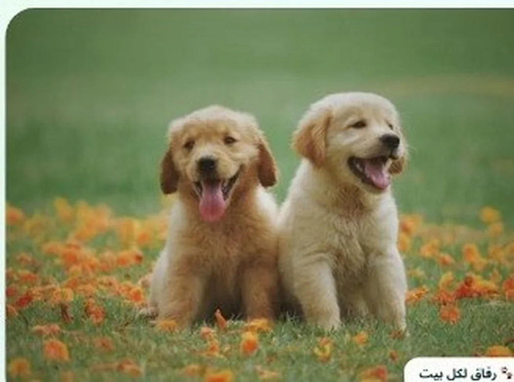
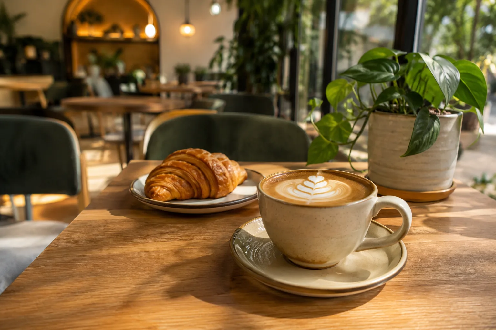

01
تجربة رقمية · متجر إلكتروني
Pet World — متجر الحيوانات الأليفة
متجر متعدد الصفحات يسهّل اكتشاف المنتجات وتنظيم المشتريات في تجربة ممتعة.
مساحة لعرض مشاريع تصميم الواجهات والهويات البصرية والأفكار الإبداعية، بأسلوب يجمع الجمال وسهولة الاستخدام.


ثلاث وجهات إبداعية مختلفة. مرّر المؤشر فوق الصور، ثم افتح التجربة التي تلفت انتباهك.
متجر متعدد الصفحات يسهّل اكتشاف المنتجات وتنظيم المشتريات في تجربة ممتعة.
هوية دافئة لمقهى متخيّل، مع موقع تفاعلي لاستعراض القائمة واختيار الطلب.
لوحة طقس تفاعلية تعرض حالات جوية توضيحية لمدن مختلفة بتصميم هادئ.
لا توجد أعمال في هذا التصنيف حاليًا.
«إبداع» مساحة لعرض مفاهيم تصميمية وتجارب رقمية مستقلة، تستكشف التصميم الجرافيكي وواجهات الويب والهويات البصرية. يركز على وضوح الفكرة، وتناسق الألوان، وسهولة التنقل، وعرض نتيجة كل عمل بطريقة مباشرة.
تنقّل بين التجارب الثلاث واكتشف كيف تتحول الفكرة إلى واجهة قابلة للاستكشاف.